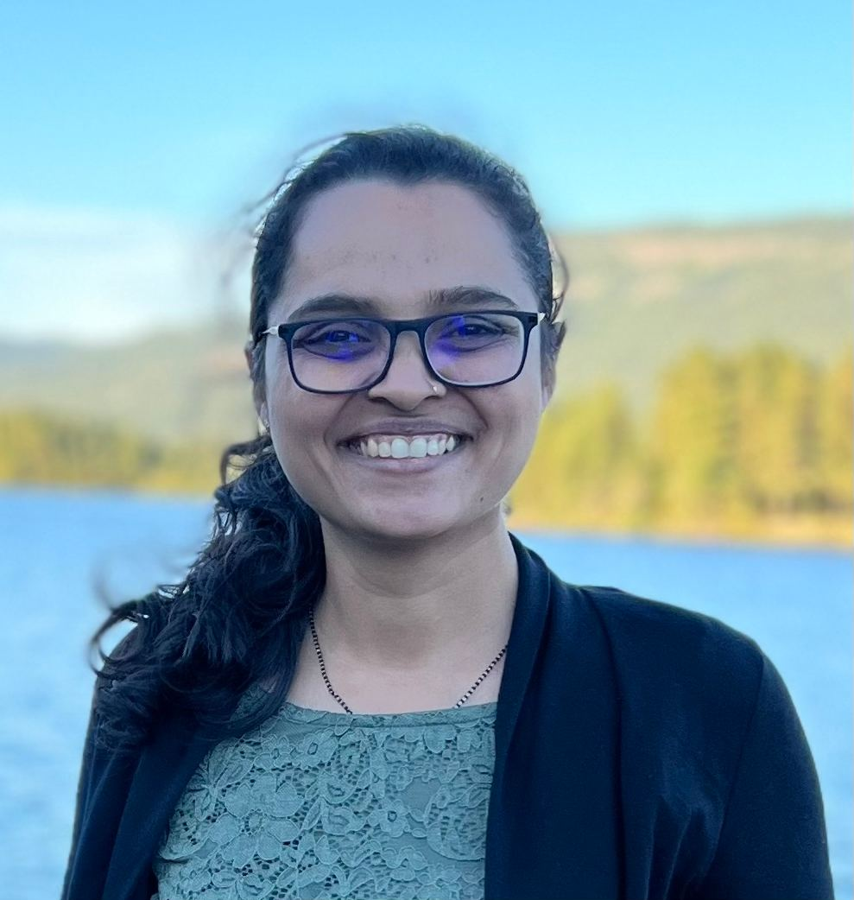

Γειά σου!
I am a post-doctoral fellow at The Cyprus Institute, hosted by Prof. Constantine Dovrolis. I graduated with a Ph.D. in Computer Science from National Institute of Science Education and Research, Bhubaneswar, India, and was advised by Dr. Subhankar Mishra.
Prior to this, I graduated from Goa College of Engineering with a B.E. in Computer Engineering and Goa University with a M.Tech in Computer Science.
Currently, I am working on ML applications in medical imaging as part of the PROTECT project funded by the European Union Recovery and Resilience Facility of the NextGenerationEU instrument, through the Research and Innovation Foundation, Cyprus.